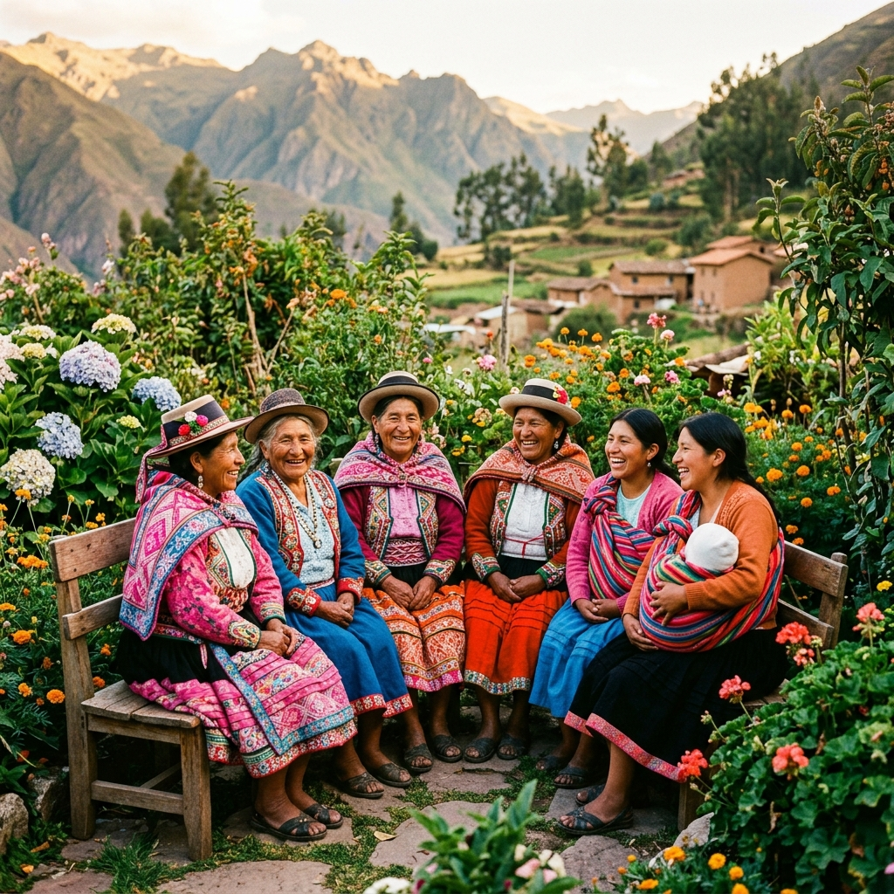

Impacto real
Más de 80 familias
Únete al movimiento
Más de 80 familias
con una nueva esperanza
El impacto de Huilloa Verde va mucho más allá de los productos. Para muchas familias, este proyecto representó un ingreso digno cuando más lo necesitaban. Para otras, fue la oportunidad de valorar y compartir el conocimiento ancestral que habían heredado.
Mujeres emprendedoras, agricultores locales, recolectoras de hierbas: todos encuentran en Huilloa Verde un espacio de dignidad, trabajo y pertenencia. Un movimiento que transforma la pobreza en flor.
80+
Familias beneficiadas
5+
Comunidades unidas